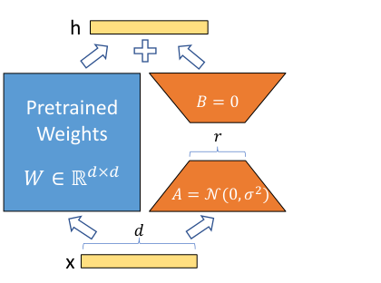
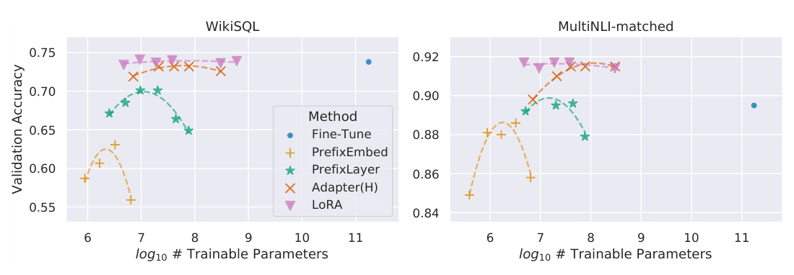
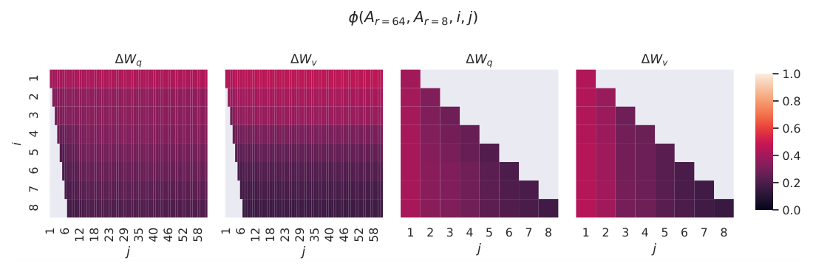

原模型一个数都不动，只训练一小块改动
Hu 等人 2021 年在微软写的《LoRA: Low-Rank Adaptation of Large Language Models》。到 GPT-3 这个量级，让模型适应一个新任务，要把 1750 亿个参数全部更新，每个任务存一份 350GB 的新模型。LoRA 的做法是：把原来的权重 W₀ 冻住，只训练一个「低秩」的改动量 ΔW = BA，也就是两个又瘦又长的小矩阵。可训练参数能少到全量微调的万分之一，效果追平全量微调；训完把 BA 加回 W₀，推理时和原模型一样快。
- 正文只走一条线：全量微调存不下 → 现有省参数办法各有毛病 → 把改动量限制成低秩 → 怎么初始化、怎么合并 → 每个结论对应哪个实验。只读每节标题和每段第一句，也能串起来。
- 第 2 节讲「秩」是什么，不用线性代数基础，用一个 3×3 的小例子讲清。公式、符号表、显存账、概念注解、完整结果表、当时的背景，都在页尾的附录里，默认折叠，标明对应原文第几节。
- 小数字例子都验算过：为讲解设定的标「示意」，按原文规格估算的标「推算」。
- 零件在前面讲过：注意力的 Wq、Wv 在 004 Transformer，Adam 要为每个参数多存两份状态在 005 Adam，「预训练再微调」在 006 GPT-1 和 008 BERT，实验对象 GPT-3 在 011 GPT-3。本篇不改架构，也不改预训练，只改「微调时更新什么」。
1要解决的问题
006、008 之后的标准做法是「预训练 + 全量微调」：每个下游任务，都把模型的全部参数更新一遍，得到一份和原模型一样大的新模型。BERT 才一亿多到三亿多参数，这只是不方便。到 GPT-3 的 1750 亿参数，原文的说法是它从「不方便」变成了「部署上的关键难题」。难在两处：存不下，练不起。
存的毛病：每个任务一份 350GB 的新权重，100 个任务就是 35TB。练的毛病：训练时每个被更新的参数，还要多带一份梯度和 Adam 的两份状态（005 讲过），占的内存是参数本身的好几倍，训练显存和预训练是同一个量级。冻住的参数不需要梯度，也不需要优化器状态。这正是 LoRA 省显存的来源。
所以问题是：既要像微调那样改变模型的行为，又不能为每个任务背一整个大模型。「每个任务独有的参数」必须比模型本体小得多。
前人的省参数办法，各有一个硬伤
作者把已有办法归成两类。Adapter 在每一层里串插一个小模块；prefix / prompt 调优在输入端加一些可训练的向量。它们参数很少，但在大规模、在线服务的场景里各有毛病：
- Adapter 拖慢推理。大模型靠硬件并行保持低延迟，而 adapter 是串联的，必须按顺序多算几步。批大小为 1 的在线请求，GPU 本来就没吃满，多一步就多一份固定开销。
- 前缀类难优化，还挤占序列长度。原文观察到它对参数量的变化不单调；给适配预留的位置，必然减少任务能用的序列长度。后一点原文只是推测它拖了效果。
- 两类的共同问题：效果常追不上全量微调。
LoRA 要同时做到四件事：可训练参数少；推理零额外延迟；不占序列长度；效果不输全量微调。下面三步，就是它怎么做到的。
2第一步：把改动量压成两个小矩阵
微调后的权重是 W₀ + ΔW，ΔW 是「微调带来的改变量」，和 W₀ 一样大。LoRA 的想法是：不学完整的 ΔW，把它限制成两个小矩阵的乘积 BA，只学 B 和 A。这里要用到「秩」。
秩：一个矩阵里真正独立的信息有几份
先看一个 3×3 矩阵。第 2 行是第 1 行的 2 倍，第 3 行是第 1 行的 3 倍，9 个数其实只有一份信息：[1, 2, 3] 这一行，加上「每行放大几倍」。它可以写成一个列向量乘一个行向量，秩是 1。
换个角度看 BA 在做什么：A 把 k 维的输入压成 r 个数，B 再把这 r 个数展开成 d 维的输出。不管输入是什么，输出都只能是 B 的 r 个列的组合，被关在一个 r 维的子空间里。低秩，就是一个信息瓶颈。
凭什么假设改动量是低秩的
依据是前人（Aghajanyan 等 2020）的发现：预训练语言模型有很低的「内在维度」，把参数随机投影到一个小得多的子空间里，也能学得好。作者受此启发，提出假说：适配过程中的权重变化，也有很低的「内在秩」。这是一次类比，不是推出来的。我补充的：内在维度是在随机选的小子空间里训练，LoRA 的 B、A 却是学出来的，所以「内在维度低」并不能逻辑上推出「ΔW 低秩」。论文后面给的是间接证据，见第 7 节。

这一步对着的是第 1 节的前两个毛病：每个任务新增的参数从「和模型一样大」变成 r × (d + k)；训练时只有 A、B 需要梯度和优化器状态。精确写法见附录 A 式 2、式 3。
3第二步：让训练从原模型出发
怎么给 A 和 B 赋初值，原文只用一句话交代：A 用高斯随机数，B 全设成 0，所以训练开始时 ΔW = BA = 0，模型的输出和预训练模型一模一样，不会因为随机初始化一上来就被弄坏。
那为什么不把 A 也设成 0？原文没写，这是我的推导：A、B 都为 0 时，B 的梯度含 Ax，A 的梯度含 Bᵀ，两个都是 0，永远学不动。A 随机、B 为 0 时，第一步只有 B 会动，B 一旦不再是 0，A 的梯度就非零了，下一步 A 也开始动。小数字验算见附录 A。
另外，实际前向是 h = W₀x + (α/r)·BAx。α 是个常数，作者不调它，直接设成第一次试的那个 r。除以 r 的作用，原文说是换 r 的时候不用重新调超参，只是一个让训练更稳的工程技巧，不改变模型能表达什么。
4第三步：训完加回去，推理不变慢
部署的时候，可以直接算出 W = W₀ + BA，存下来，照常推理。道理只有一句：矩阵乘法对加法是分配的，(W₀ + BA)x = W₀x + BAx。LoRA 的旁路是线性的，没有非线性，并且和 W₀ 吃同一个输入，所以两条路加起来等价于一个矩阵。合并后模型的形状和原模型一模一样，一个多余的乘法都没有。
这一步对着的是 adapter 的延迟毛病：LoRA 从构造上不比微调后的模型多任何推理延迟。作者承认的代价是：合并之后，同一个批里混放不同任务的输入就不方便了，因为一次前向只能用一份合并后的 W。不合并的话可以按样本动态选择 LoRA 模块，适合对延迟不敏感的场景。
5加在哪些矩阵上，要多少参数
一层 Transformer 里有 4 个注意力矩阵（Wq、Wk、Wv、Wᴼ）和 2 个前馈矩阵。原理上 LoRA 能加在任何稠密层。本文为了简单和省参数，只调注意力里的权重，冻住前馈层，主实验又只选 Wq 和 Wv。前馈层、LayerNorm、偏置怎么样，原文留给未来。
我用 GPT-3 175B 的尺寸（d_model = 12288，96 层）验算了这个选择。每层的 4 个注意力矩阵占 4d²，两个前馈矩阵占 8d²，注意力只占权重的 1/3，只调 Wq 和 Wv 触及的更是只有 1/6。可训练参数的公式是 2 × 加了 LoRA 的矩阵个数 × d_model × r：
| 配置（推算） | 算式 | 可训练参数 |
|---|---|---|
| Wq + Wv，96 层，r = 1 | 2 × 192 × 12288 × 1 | 4,718,592 ≈ 4.7M |
| 同上，r = 4 | 2 × 192 × 12288 × 4 | 18,874,368 ≈ 18.9M |
| 同上，r = 8 | 2 × 192 × 12288 × 8 | 37,748,736 ≈ 37.7M |
GPT-3 的 1750 亿里，4.7M 约占 0.003%。原文 4.2 节说，r = 4、只调 q 和 v，检查点从 350GB 缩到 35MB，约 1 万倍。我按 18.9M × 2 字节算出的是 37.7MB，原文写 35MB，略有出入，可能是口径不同，见附录 I。
6证据一：效果追平全量微调
实验的思路是：先在小模型（RoBERTa、DeBERTa、GPT-2）上，和前人逐字对齐设置，直接引用已发表的基线数字（表里带 * 的行）；再放到 GPT-3 175B 上做压力测试。任务覆盖自然语言理解（GLUE）和生成（E2E、WikiSQL、SAMSum）。先看最大的一组，GPT-3 175B：
怎么读这张图：
- 最小的 LoRA（4.7M）追平全量微调。WikiSQL 73.4 对 73.8，差 0.4，在 ±0.5% 的波动内，等于持平；MNLI-m 91.7 对 89.5，高 2.2，远大于 ±0.1%，是真实的优势。
- 同一个参数量级，LoRA 好过 adapter。LoRA 4.7M 对 Adapter 7.1M，WikiSQL 73.4 对 71.9，MNLI 91.7 对 89.8；Adapter 要加到 40.1M 才接近，而且推理还要变慢。
- 前缀类最差。PreEmbed 在 WikiSQL 只有 63.1，比全量微调低 10 个点。
- 全量微调不是上限。MNLI 上它（89.5）输给了不少省参数的方法。原文没有解释，我的推测是：几十万样本对 1750 亿参数，全量微调可能更容易过拟合或冲掉预训练的知识，冻结起到了正则化的作用。这只是推测，原文没有验证。

这条趋势和 LoRA 的构造是对得上的：把 LoRA 加到所有矩阵、再把 r 加到满秩，就大致回到训练原模型；而 adapter 增大会收敛到一个 MLP，前缀类会收敛到一个吃不下长输入的模型（原文 4.1 节）。
小模型上也一样，数据少时更明显
- RoBERTa、DeBERTa（GLUE 平均分）：RoBERTa-base 的 LoRA（0.3M）87.2，全量微调（125M）86.4；RoBERTa-large 的 LoRA（0.8M）89.0，全量微调（355M）88.9；DeBERTa-XXL 的 LoRA（4.7M）91.3，全量微调（1500M）91.1。差距只有零点几，小数据集单项的标准差能到 ±1 至 ±2.5，所以稳妥的读法是「追平」。
- GPT-2 medium，E2E 的 BLEU：LoRA（0.35M）70.4，全量微调 68.2，AdapterL（0.37M）66.3，adapter 要加到 11.09M 才有 68.9。
- MNLI 数据少的时候（GPT-3，验证准确率）：只有 100 条标注，LoRA 63.8，全量微调 60.2，PrefixEmbed 37.6（接近三分类的随机水平 33%）；1k 条是 85.6 对 85.8，10k 条是 89.2 对 88.9，持平；全量 39.2 万条是 91.7 对 89.5。作者称之为样本效率：新引入的自由度越少，少量数据下越不容易过拟合。
前面 RoBERTa 表里不同行用的设置不同，带 † 的行是严格对齐前人设置重跑的，LoRA† 的 88.6 低于无标记行的 89.0，比较时要看同类标记的行。这几张表的完整数字在附录 E。
另外 GPT-3 在 Few-shot 提示下并不够：MNLI-m 只有 40.6%，微调后是 89.5%（原文附录 A 的 Table 8），所以不能指望只靠提示，参数更新仍然有价值。
训练的代价上，原文的数字是：显存约降到三分之一（1.2TB 到 350GB），训练吞吐从每张 V100 每秒 32.5 个 token 变成 43.1 个，原文把它说成「25% 的加速」。我按 43.1 ÷ 32.5 算出吞吐高了约三分之一，同样的数据用时少约四分之一，两种说法对得上。速度只快一点，是因为梯度仍要穿过整个冻住的网络传回前面各层，只省掉了「算权重梯度」那一步。
7证据二：为什么低秩就够
追平全量微调，只能说明「低秩够用」。作者还追问了三件事，全部在 GPT-3 175B 上做：加在哪些矩阵上？秩到底取多少？ΔW 和原来的 W 是什么关系？
加在哪些矩阵上：分散到更多矩阵，比集中在一个上好
固定参数预算 18M（约 35MB），调一类矩阵取 r = 8，两类取 r = 4，四类取 r = 2。结果是只调 Wq 或 Wk 明显偏低（WikiSQL 70.4、70.0），Wv、Wᴼ 较好（73.0、73.2），Wq 加 Wv（各 r = 4）是 73.7，四类各 r = 2 也是 73.7（MultiNLI 91.7，最高）。原文的结论是：即使秩只有 4，也已经捕获了 ΔW 里足够的信息，所以调更多种矩阵，比把秩加大到单种矩阵上更好。如果 ΔW 本来需要高秩，把秩从 8 压到 2 应该明显伤效果，但没有。为什么 Wq、Wk 单独调效果差，原文没解释。我的猜想是：Wq、Wk 只决定注意力怎么分配，Wv、Wᴼ 决定取回什么内容、怎么汇总，对生成 SQL 这种格式，后者更关键；这没有验证。
秩取多少：1 就够用
原文的话是「出乎意料，秩小到 1 也够用」。r = 64 并不比 r = 4、r = 8 更好，多出来的秩没带来有用的信息。这一点要带条件：它是 GPT-3 上的结果。GPT-2 medium 上 r = 1 明显差（附录 H.2：BLEU 68.72 对 r = 4 的 70.38），所以「r = 1 就够」不是普遍结论，原文脚注也预警过：小 r 不一定对每个任务都有效。
多出来的方向是信号还是噪声
光靠 Table 6 不够：r = 1 够用，也可能只是任务简单。作者再检查 LoRA 学到的方向本身稳不稳。办法是：同一个预训练模型，分别训练 r = 8 和 r = 64 的 LoRA，对两个 A 矩阵做奇异值分解，比较「r = 8 的前 i 个方向，有多少落在 r = 64 的前 j 个方向张成的空间里」，相似度 φ 取 0 到 1，1 是完全包含，0 是完全垂直（精确定义见附录 A 式 4）。

原文的推论是：最上面的奇异向量方向最有用，其余的方向，可能主要是训练中累积的随机噪声，所以 ΔW 确实可以很低秩。道理是：多出来的方向如果也是有用信号，r = 8 训练时也应该学到，两次就会重合；它们不重合，说明是随机的。用两个不同随机种子训练的 r = 64 做同样的比较，也是如此；ΔWq 比 ΔWv 有更多共同方向，与 Table 6 里 Wq 需要更大 r 相符。对照是两个随机高斯矩阵，完全没有共同方向。
ΔW 在放大什么：W 里本来有、但不突出的方向
最后，作者把 W 投影到 ΔW 的前 r 个主方向上，看 W 在这些方向上有多少成分，并用 W 自己最强的 r 个方向和随机方向做对照（GPT-3 第 48 层的 Wq，r = 4）：
三条读法（原文）：第一，0.32 远大于随机的 0.02，说明 ΔW 的方向不是随机落在 W 之外，它放大的是 W 里已有的一些特征。第二，0.32 远小于 21.67，说明 ΔW 放大的不是 W 最强的方向，而是 W 里不被强调的方向。第三，放大倍数约 20（6.91 ÷ 0.32 ≈ 21.6，原文写 21.5，附录说「as large as 20」）；r = 64 时放大只有约 2 倍，说明大 r 下真正做事的只是少数几个方向。原文的解释是「可能」：低秩适配在放大那些预训练学到了、但没被强调的、对下游任务重要的特征。这给出一个好记的图像：预训练把各种能力都存了，微调只是把任务相关的几个方向的音量调大。
我补充的：这三组分析都是在 LoRA 自己学出来的 A、B 上做的，而且 Figure 3、Table 7 只展示了单层、单个矩阵；作者没有对全量微调得到的 ΔW 做同样的分解。所以它们证明的是「低秩足够」，不是「全量微调的 ΔW 本来就低秩」。作者开篇用的是 hypothesize，后文的措辞渐渐变强，这一点附录里有对照。
原文的结论，两句话：用冻结的大模型加一条低秩旁路，效果追平全量微调，可训练参数少到万分之一，推理零额外延迟；低秩够用的原因，作者给的是间接的、有限的证据。
8局限和后来
作者承认的局限。合并 BA 后，一个批里混放不同任务的输入不方便；小 r 不一定对所有任务都有效，比如下游任务是一种预训练时没见过的新语言；选哪些矩阵「主要靠启发式」，前馈层、LayerNorm、偏置都没研究；总体机制「远未清楚」（第 8 节，问的是预训练学到的特征如何被改造去做下游任务，不是专指低秩）。
我补充的。实验都是短任务、有标注数据的语言任务（GLUE、E2E、WikiSQL、SAMSum），没有覆盖需要大幅改变模型知识的场景；基线数字大量引自前人，调参力度未必对等；Table 4 是验证集结果，选矩阵、选秩也看验证集，可能有少量选择偏差。
后来。下面这些是我凭印象写的，细节待核实：LoRA 成了参数高效微调最主流的做法之一，被各类开源微调工具直接支持，也常用于图像扩散模型的风格微调；后来有 QLoRA（先把冻结的底座量化到 4 比特）、AdaLoRA 等变体，对着的正是本文留下的「秩怎么选、加在哪些矩阵」。本文自己说了，它不回答「往哪个方向改」，那是后面几篇的事：015 人类偏好、016 PPO、017 对齐研究、018 InstructGPT。
附录 · 想深入再看
A · 公式、符号表和小推导（原文 4.1、5.1 节，7.2 节）
符号表
- W0 ∈ ℝd×k：预训练权重，冻结。B ∈ ℝd×r、A ∈ ℝr×k：可训练的两个小矩阵，r ≪ min(d, k)。α：常数，不随 r 变；作者直接设成第一次试的 r，不调。
- Φ0、ΔΦ、Θ：预训练参数、全量微调的改变量、LoRA 的小参数集。LLoRA：加了 LoRA 的矩阵个数。lp、li：前缀、中缀的特殊 token 数。
A 为什么随机、B 为什么是 0：小例子（我的推导，原文没写）
d = k = 2，r = 1。h = W0x + B(Ax)，设损失对 h 的梯度是 g。链式法则：∂L/∂B = g·(Ax)⊤，∂L/∂A = (B⊤g)·x⊤。取 x = [1, 2]，g = [1, −1]。
| 情形 | 第一步的梯度 | 结论 |
|---|---|---|
| A = [0.5, −0.3]，B = 0（LoRA） | Ax = −0.1，∂L/∂B = [−0.1, 0.1]（非零），∂L/∂A = 0。设学习率 η，B 变成 [0.1η, −0.1η]⊤；第二步 B⊤g = 0.2η ≠ 0，A 的梯度非零 | 起点等于原模型，且都能学动 |
| A、B 都为 0 | Ax = 0，B = 0，两个梯度都是 0（Adam 的 m、v 也是 0） | 永远停在原地 |
| A、B 都随机 | 能训练 | 起点 BA ≠ 0，模型一开始就被随机扰动 |
「为什么偏偏 B 为 0、A 随机，而不是反过来」，原文没有讨论，我认为是习惯选择，待核实。
α/r：为什么除以 r（我的直觉，原文只引用了 Yang & Hu 2021）
BA 的每个元素是 r 项之和。Adam 让每个参数每步的变化大小差不多，r 越大，求和的项越多，ΔW 的幅度越容易跟着变大；除以 r 把幅度拉回同一量级，同一个学习率就能在不同 r 下大致通用。示意：每项贡献 0.01，r = 4 的和是 0.04，r = 64 的和是 0.64，差 16 倍；乘上 α/r（α = 8）以后都是 0.08。真实训练里各项并非同号同大小，实际增长多快原文没给。实际设置里 α 并不总等于所用的 r：DeBERTa 用 r = 8、α = 8，GPT-2 用 r = 4、α = 32（附录 Table 10、11）。
子空间相似度 φ 的小例子（我验算的）
三维空间里，U_B 张成 {e₁, e₂}。U_A = e₁：φ = 1（完全包含）；U_A = e₃：φ = 0（垂直）；U_A = [1, 0, 1]/√2：φ = 0.5（一半重合）。随机方向在上万维空间里几乎互相垂直，φ 接近 0，这是 Figure 4 右图随机矩阵没有共同方向的含义。
B · 全量微调到底贵在哪：一笔显存账（原文第 1、4.2 节，脚注 4、5）
- 存。GPT-3 175B，每个参数 2 字节（FP16）：175 × 10⁹ × 2B = 350GB，与原文一致（我验算）。100 个任务：100 × 350GB ≈ 35TB。原文脚注 4：存 100 个适配模型只需 350GB + 35MB × 100 ≈ 354GB。
- 练。每个被训练的参数，除了权重本身，还要带梯度（一份）和 Adam 的 m、v（两份，005 讲过）。冻住的参数都不需要。原文：GPT-3 175B 训练显存从 1.2TB 降到 350GB，最多降 2/3。
- 我的简化算法，原文没给逐项明细：只算「权重 + m + v」三份，冻住后只剩权重一份，省 2/3，和原文说法对得上。但 1.2TB ÷ 175B ≈ 6.9 字节/参数，具体怎么拆（梯度、主权重副本等），原文没写，我不替它编。
- 速度只快一点。冻结权重不等于不用反向传播：梯度仍要穿过整个网络传到前面各层的 LoRA 模块，只是省掉「算权重梯度」这一步。脚注 5：全量微调每张 V100 每秒 32.5 个 token，LoRA 是 43.1 个，相同分片数；43.1 ÷ 32.5 ≈ 1.33，原文说成 25% 的加速。
- 训练设置：GPT-3 实验用 AdamW，2 个 epoch，批大小 128，权重衰减 0.1，学习率 LoRA 2e-4、全量微调 5e-6（相差 40 倍，附录 D.4、Table 12）。原文没有解释，我推测：全量微调动的是已训练好的权重，步子大了容易破坏预训练好的能力，LoRA 的 A、B 起点在零附近，学习率可以大得多。
C · 几个概念：内在维度、adapter 与前缀调优、奇异值分解与范数（原文 1、4.1、5.1、7 节）
- 内在维度（Li 等 2018；Aghajanyan 等 2020）：不更新全部 D 个参数，而是固定一个随机投影 P，只在一个很小的 d 维子空间里更新：θ = θ₀ + Pθ_d，只训练 θ_d。d 取很小也能达到全量微调的大部分效果，说明任务的内在维度低。原文引用转述为：预训练语言模型的内在维度很低，原文没给具体数字，我印象里是几百维，且模型越大越低，待核实。
- Adapter（Houlsby 等 2019）：在每层子层之后、残差相加之前，串联一个小瓶颈网络（下投影 d → m，非线性，上投影 m → d）。变体：AdapterH（Houlsby 原设计，每块两个）、AdapterL（Lin 等 2020，每块一个，带 LayerNorm）、AdapterP（Pfeiffer 等 2021）、AdapterD（AdapterDrop，丢掉一部分层）。
- 前缀 / 提示调优：PreEmbed 在输入前（prefix）或后（infix）加若干可训练的特殊 token，词向量可训练，不对应真词；PreLayer（Li & Liang 2021 的 prefix-tuning）每一层之后都把这些位置的激活值换成可训练向量。PreEmbed 与 Lester 等 2021 的 prompt tuning 思路相近，这一对应是我补充的，待核实。
- BitFit（Zaken 等 2021）：只训练偏置向量，其他全冻结，另一个极省参数的基线。
- 奇异值分解 SVD：任何矩阵 M 都能写成若干「方向 × 强度」的叠加：M = σ₁u₁v₁⊤ + σ₂u₂v₂⊤ + …，σ 从大到小排，非零 σ 的个数就是秩。正文第 2 节里秩 1 的矩阵只有一项。
- Frobenius 范数 ‖M‖_F：所有元素平方、相加、再开根号，衡量矩阵整体大小。例：[[3,0],[0,4]] 的范数是 √(9+16) = 5。
- GLUE、BLEU 等评价：GLUE 见 008，BLEU 见 002。E2E、WebNLG、DART 是数据到文本的生成任务，WikiSQL 是自然语言转 SQL，SAMSum 是对话摘要。
D · 相关工作与当时的背景（原文第 6 节，2021 年）
- 模型规模。GPT-3（2020）1750 亿参数，是当时单个 Transformer 语言模型的最大规模；009 的规模定律给出「越大越好」的方向，大家都往大走，间接造成了「微调副本存不下」的痛点。
- 同期的高效适配方法。Adapter（2019）、Prefix-tuning（Li & Liang，2021 年 1 月）、Prompt tuning（Lester 等，2021 年 4 月）、BitFit（2021）、Compacter（原文称同期）、P-tuning（Liu 等 2021）。LoRA 在 2021 年 6 月上传 arXiv，抓住了「adapter 慢、prefix 难调」这一对缺口。
- 硬件。本文实验用 NVIDIA Tesla V100，GPT-3 175B 的训练需要模型并行。
- 理论背景。原文第 6 节列了深度学习里低秩结构的相关工作（过参数化网络训练后的低秩性质、显式低秩约束的网络压缩、矩阵分解等），并强调据作者所知，没有工作考虑过对冻结的模型做低秩更新来适配下游任务，这是它自认的新颖之处。
- 作者开源了什么。PyTorch 集成包，以及 RoBERTa、DeBERTa、GPT-2 的实现和检查点（GitHub: microsoft/LoRA）。
E · 完整结果表（原文 Table 1、2、3、4、5、6、8、16）
Table 1 推理延迟（GPT-2 medium，毫秒，100 次平均，NVIDIA Quadro RTX8000）
| 批 / 序列长 / adapter 的 |Θ| | Fine-tune / LoRA | AdapterL | AdapterH |
|---|---|---|---|
| 32 / 512 / 0.5M | 1449.4±0.8 | 1482.0±1.0 (+2.2%) | 1492.2±1.0 (+3.0%) |
| 16 / 256 / 11M | 338.0±0.6 | 354.8±0.5 (+5.0%) | 366.3±0.5 (+8.4%) |
| 1 / 128 / 11M | 19.8±2.7 | 23.9±2.1 (+20.7%) | 25.8±2.2 (+30.3%) |
我复核了百分比：23.9 ÷ 19.8 = 1.207，25.8 ÷ 19.8 = 1.303。原文附录 B 的 Figure 5 把批和序列长度扫了一遍：批和序列长到一定程度，延迟会被摊平（Rücklé 等也观察到），在线短序列场景下可以慢到 30% 以上。多卡场景更糟：模型切到多张 GPU，更深的网络需要更多同步操作。
Table 2 GLUE（* 引用前人，† 严格按 Houlsby 等的设置重跑：序列长 128，固定批大小，MRPC / RTE / STS-B 从预训练模型而非 MNLI 检查点初始化）
| 模型与方法 | 参数 | MNLI | SST-2 | MRPC | CoLA | QNLI | QQP | RTE | STS-B | 平均 |
|---|---|---|---|---|---|---|---|---|---|---|
| RoBbase FT* | 125.0M | 87.6 | 94.8 | 90.2 | 63.6 | 92.8 | 91.9 | 78.7 | 91.2 | 86.4 |
| RoBbase BitFit* | 0.1M | 84.7 | 93.7 | 92.7 | 62.0 | 91.8 | 84.0 | 81.5 | 90.8 | 85.2 |
| RoBbase AdptD* | 0.3M | 87.1±.0 | 94.2±.1 | 88.5±1.1 | 60.8±.4 | 93.1±.1 | 90.2±.0 | 71.5±2.7 | 89.7±.3 | 84.4 |
| RoBbase AdptD* | 0.9M | 87.3±.1 | 94.7±.3 | 88.4±.1 | 62.6±.9 | 93.0±.2 | 90.6±.0 | 75.9±2.2 | 90.3±.1 | 85.4 |
| RoBbase LoRA | 0.3M | 87.5±.3 | 95.1±.2 | 89.7±.7 | 63.4±1.2 | 93.3±.3 | 90.8±.1 | 86.6±.7 | 91.5±.2 | 87.2 |
| RoBlarge FT* | 355.0M | 90.2 | 96.4 | 90.9 | 68.0 | 94.7 | 92.2 | 86.6 | 92.4 | 88.9 |
| RoBlarge LoRA | 0.8M | 90.6±.2 | 96.2±.5 | 90.9±1.2 | 68.2±1.9 | 94.9±.3 | 91.6±.1 | 87.4±2.5 | 92.6±.2 | 89.0 |
| RoBlarge AdptP† | 3.0M | 90.2±.3 | 96.1±.3 | 90.2±.7 | 68.3±1.0 | 94.8±.2 | 91.9±.1 | 83.8±2.9 | 92.1±.7 | 88.4 |
| RoBlarge AdptP† | 0.8M | 90.5±.3 | 96.6±.2 | 89.7±1.2 | 67.8±2.5 | 94.8±.3 | 91.7±.2 | 80.1±2.9 | 91.9±.4 | 87.9 |
| RoBlarge AdptH† | 6.0M | 89.9±.5 | 96.2±.3 | 88.7±2.9 | 66.5±4.4 | 94.7±.2 | 92.1±.1 | 83.4±1.1 | 91.0±1.7 | 87.8 |
| RoBlarge AdptH† | 0.8M | 90.3±.3 | 96.3±.5 | 87.7±1.7 | 66.3±2.0 | 94.7±.2 | 91.5±.1 | 72.9±2.9 | 91.5±.5 | 86.4 |
| RoBlarge LoRA† | 0.8M | 90.6±.2 | 96.2±.5 | 90.2±1.0 | 68.2±1.9 | 94.8±.3 | 91.6±.2 | 85.2±1.1 | 92.3±.5 | 88.6 |
| DeBXXL FT* | 1500.0M | 91.8 | 97.2 | 92.0 | 72.0 | 96.0 | 92.7 | 93.9 | 92.9 | 91.1 |
| DeBXXL LoRA | 4.7M | 91.9±.2 | 96.9±.2 | 92.6±.6 | 72.4±1.1 | 96.0±.1 | 92.9±.1 | 94.9±.4 | 93.0±.2 | 91.3 |
指标：MNLI 为整体（matched 与 mismatched）准确率，CoLA 为 Matthew 相关系数，STS-B 为 Pearson 相关系数，其余为准确率。同参数量 0.8M 的比较里，RTE 上差距最大：LoRA† 85.2 对 AdptH 72.9。
Table 3 GPT-2 在 E2E NLG Challenge 上（* 引用前人）
| 模型与方法 | 参数 | BLEU | NIST | MET | ROUGE-L | CIDEr |
|---|---|---|---|---|---|---|
| GPT-2 M FT* | 354.92M | 68.2 | 8.62 | 46.2 | 71.0 | 2.47 |
| GPT-2 M AdapterL* | 0.37M | 66.3 | 8.41 | 45.0 | 69.8 | 2.40 |
| GPT-2 M AdapterL* | 11.09M | 68.9 | 8.71 | 46.1 | 71.3 | 2.47 |
| GPT-2 M AdapterH | 11.09M | 67.3±.6 | 8.50±.07 | 46.0±.2 | 70.7±.2 | 2.44±.01 |
| GPT-2 M FTTop2* | 25.19M | 68.1 | 8.59 | 46.0 | 70.8 | 2.41 |
| GPT-2 M PreLayer* | 0.35M | 69.7 | 8.81 | 46.1 | 71.4 | 2.49 |
| GPT-2 M LoRA | 0.35M | 70.4±.1 | 8.85±.02 | 46.8±.2 | 71.8±.1 | 2.53±.02 |
| GPT-2 L FT* | 774.03M | 68.5 | 8.78 | 46.0 | 69.9 | 2.45 |
| GPT-2 L AdapterL | 0.88M | 69.1±.1 | 8.68±.03 | 46.3±.0 | 71.4±.2 | 2.49±.0 |
| GPT-2 L AdapterL | 23.00M | 68.9±.3 | 8.70±.04 | 46.1±.1 | 71.3±.2 | 2.45±.02 |
| GPT-2 L PreLayer* | 0.77M | 70.3 | 8.85 | 46.2 | 71.7 | 2.47 |
| GPT-2 L LoRA | 0.77M | 70.4±.1 | 8.89±.02 | 46.8±.2 | 72.0±.2 | 2.47±.02 |
读法：同样 0.35M 量级，AdapterL 0.37M 只有 66.3，LoRA 达到 70.4，比全量微调的 68.2 高 2.2；adapter 要加到 11.09M（68.9）才接近，是 LoRA 的 30 多倍。LoRA 对 PreLayer 略高，但 PreLayer 的数字来自 Li & Liang 原论文，LoRA 是作者自己跑的，调参力度未必对等。只调最后两层（FTTop2）的 BLEU 是 68.1，参数 25.19M，是 LoRA 的 70 多倍。GPT-2 L 上优势变小（70.4 对 70.3）。
Table 4 GPT-3 175B（WikiSQL 与 MNLI-m 为验证准确率 %，SAMSum 为 Rouge-1/2/L）
| 方法 | 参数 | WikiSQL | MNLI-m | SAMSum |
|---|---|---|---|---|
| GPT-3 FT | 175,255.8M | 73.8 | 89.5 | 52.0/28.0/44.5 |
| BitFit | 14.2M | 71.3 | 91.0 | 51.3/27.4/43.5 |
| PreEmbed | 3.2M | 63.1 | 88.6 | 48.3/24.2/40.5 |
| PreLayer | 20.2M | 70.1 | 89.5 | 50.8/27.3/43.5 |
| AdapterH | 7.1M | 71.9 | 89.8 | 53.0/28.9/44.8 |
| AdapterH | 40.1M | 73.2 | 91.5 | 53.2/29.0/45.1 |
| LoRA | 4.7M | 73.4 | 91.7 | 53.8/29.8/45.9 |
| LoRA | 37.7M | 74.0 | 91.6 | 53.4/29.2/45.1 |
波动范围：WikiSQL ±0.5%，MNLI-m ±0.1%，SAMSum ±0.2/±0.2/±0.1。LoRA 的两行是两档参数预算，每格取自该预算下的某个配置，不都来自 Wq + Wv 同一个 r：附录 Table 15 里，4.7M 的 MNLI 91.7 来自 rv = 2（rq = rv = 1 是 91.3），37.7M 的 WikiSQL 74.0 来自四类矩阵各 r = 4（rq = rv = 8 是 73.8）。同一个参数预算里分数取的是各次运行里最好的验证成绩。Table 4 是验证集，不是留出的测试集。
Table 5 固定 18M 预算，LoRA 加在哪些矩阵上（GPT-3，验证准确率）
| 调的矩阵 | Wq | Wk | Wv | Wᴼ | Wq,Wk | Wq,Wv | 四类 |
|---|---|---|---|---|---|---|---|
| 秩 r | 8 | 8 | 8 | 8 | 4 | 4 | 2 |
| WikiSQL（±0.5） | 70.4 | 70.0 | 73.0 | 73.2 | 71.4 | 73.7 | 73.7 |
| MultiNLI（±0.1） | 91.0 | 90.8 | 91.0 | 91.3 | 91.3 | 91.3 | 91.7 |
作者自己的表注是「调 Wq 和 Wv 总体最好」。四类各 r = 2 在 MNLI 上略高（91.7 对 91.3），差距接近噪声，所以主表用的只是一个简单配置，不一定是 LoRA 的最好配置，这是我的观察。
Table 6 不同的秩 r（验证准确率）
| 数据集 / 矩阵 | r = 1 | r = 2 | r = 4 | r = 8 | r = 64 |
|---|---|---|---|---|---|
| WikiSQL（±0.5）Wq | 68.8 | 69.6 | 70.5 | 70.4 | 70.0 |
| WikiSQL Wq, Wv | 73.4 | 73.3 | 73.7 | 73.8 | 73.5 |
| WikiSQL Wq, Wk, Wv, Wᴼ | 74.1 | 73.7 | 74.0 | 74.0 | 73.9 |
| MultiNLI（±0.1）Wq | 90.7 | 90.9 | 91.1 | 90.7 | 90.7 |
| MultiNLI Wq, Wv | 91.3 | 91.4 | 91.3 | 91.6 | 91.4 |
| MultiNLI Wq, Wk, Wv, Wᴼ | 91.2 | 91.7 | 91.7 | 91.5 | 91.4 |
Table 7 W 在不同方向上的 Frobenius 范数（GPT-3 第 48 层，Wq，‖Wq‖_F = 61.95）
| r = 4：ΔWq | Wq 自己 | 随机 | r = 64：ΔWq | Wq 自己 | 随机 | |
|---|---|---|---|---|---|---|
| ‖UᵀWqVᵀ‖_F | 0.32 | 21.67 | 0.02 | 1.90 | 37.71 | 0.33 |
附：‖ΔWq‖_F 在 r = 4 时是 6.91，r = 64 时是 3.57。我复核了随机一栏：用 ‖Wq‖_F ÷ 12288 ≈ 0.00504 当 W 单个元素的典型大小，乘 r = 4 得 0.0202，r = 64 时 64 × 0.00504 = 0.323，与表里的 0.02 和 0.33 吻合，说明随机一栏就是纯统计基线。r = 64 时放大倍数 3.57 ÷ 1.90 ≈ 1.9。
Table 8 Few-shot 与微调（GPT-3，验证准确率 %，原文附录 A）
| 方法 | MNLI-m | RTE |
|---|---|---|
| GPT-3 Few-Shot | 40.6 | 69.0 |
| GPT-3 Fine-Tuned | 89.5 | 85.4 |
MNLI 是三分类，随机猜约 33%。MNLI 的 few-shot 设置是每类 2 个示例，共 6 个；RTE 的 few-shot 数字取自 GPT-3 论文。
Table 16 低数据量下的 MNLI（GPT-3，验证准确率 %）
| 方法 | 100 条 | 1k 条 | 10k 条 | 全量 392K |
|---|---|---|---|---|
| Fine-Tune | 60.2 | 85.8 | 88.9 | 89.5 |
| PrefixEmbed | 37.6 | 75.2 | 79.5 | 88.6 |
| PrefixLayer | 48.3 | 82.5 | 85.9 | 89.6 |
| LoRA | 63.8 | 85.6 | 89.2 | 91.7 |
附录 F.3 的原话：LoRA 在 MNLI-100 和 MNLI-Full 上都比微调好，在 1k 和 10k 上「comparable」（随机种子带来 ±0.3 的波动）。即两端更好、中间持平。附录 E 还做了 LoRA 与前缀的组合：LoRA + PrefixEmbed 在 WikiSQL 上好于两者单独使用，说明二者有「somewhat orthogonal」的一面；LoRA + PrefixLayer 比单独 LoRA 略差，作者归因于 prefix-layer 对学习率敏感，未验证。
F · 实验设置和训练细节（原文第 5 节、附录 D）
- 基线的写法。FT 是全量微调；FT^Top2 只调最后两层；BitFit 只调偏置；PreEmbed、PreLayer 是前缀类；AdapterH / L / P / D 是 adapter 的几种设计。表里带 * 的行引自前人，不带的是作者自己跑的，带 † 的是严格对齐 Houlsby 等的设置。
- 模型与任务。RoBERTa base（125M）、large（355M）来自 HuggingFace；DeBERTa XXL（1.5B）；GPT-2 medium / large，设置尽量贴近 Li & Liang 2021；GPT-3 175B。任务：GLUE、E2E、WebNLG、DART、WikiSQL、MNLI-matched、SAMSum。
- LoRA 的配置。主实验只对 Wq、Wv 加 LoRA。RoBERTa 用 rq = rv = 8（Table 9）；RoBERTa、DeBERTa 在 MRPC、RTE、STS-B 上从最好的 MNLI 检查点初始化 LoRA 模块，除非是 † 行。
- 参数量验算（RoBERTa）。base（12 层，d = 768）对 Wq、Wv 取 r = 8：2 × 24 × 768 × 8 = 294,912 ≈ 0.3M；large（24 层，d = 1024）：2 × 48 × 1024 × 8 = 786,432 ≈ 0.8M，与 Table 2 一致。
- GPT-3 矩阵尺寸验算。每层 12d²，96 层共 12 × 96 × 12288² = 173,946,175,488 ≈ 1739 亿，加上词嵌入约 6 亿（50257 × 12288，词表大小是我凭印象写的，待核实）接近 1750 亿，说明权重几乎全在这些 d×d 矩阵里。
- 为什么把多头注意力的 Wq 当一个矩阵。004 里多头注意力把 Wq 实现成每头一个 512×64 的小矩阵，数学上等价于一个 512×512 的大矩阵按输出维度切开。本文把它们合并起来当一个矩阵（4.2 节）。
G · 作者的措辞怎么逐渐变强（对照 3 处，我的观察）
- 开篇（第 1、4.1 节）：「we hypothesize the updates to the weights also have a low intrinsic rank」，是假说。
- 第 7.2 节：「Hence, the adaptation matrix can indeed have a very low rank」；附录 H.4：「gives evidence (once again) that the intrinsic rank needed ... is low」；摘要把它称为「an empirical investigation into rank-deficiency in language model adaptation」；第 8 节更把「ΔW 的秩亏」当作前提，去推测 W 也可能秩亏。
- 我的看法：作者后文是把它当作有实验支持的结论在用。但这些证据只能说明「用 LoRA 把 ΔW 限制成低秩后，效果几乎没掉」，以及「LoRA 自己学出的主方向比较稳定」，也就是低秩足够，不是全量微调的 ΔW 本来就低秩，所以我仍按假说看待。这是我的评价，与作者的立场分开。
- 作者自己留的边界（脚注 6）：不预期小 r 对每个任务都有效；思想实验是下游任务如果是预训练时没见过的语言，重新训练整个模型（相当于 r = d_model）肯定比小 r 的 LoRA 好。
H · 前后篇衔接，和后来发展（我凭印象写，待核实）
- 继承自：004 的注意力矩阵和 d_ffn = 4 d_model（LoRA 把增量加在这些矩阵上）；005 的 Adam 状态（冻结的参数不需要）；006、008 的预训练 + 全量微调；007 的 GPT-2（实验对象）；009 的规模定律（推动模型变大，间接造成存不下副本的痛点）；011 的 GPT-3（压力测试对象）。
- 对上一篇的推进：前面这些篇把「怎么训出一个强大的通用模型」讲完了，本篇补上「拿到这个模型之后，怎么便宜地让它做具体任务」：不改架构、不改预训练，只改微调这一步，把「每任务一份整模型」变成「每任务一份几十 MB 的增量」。
- 留下的问题：LoRA 只解决「怎么便宜地改」，不解决「往哪个方向改」。015 到 018 从另一条线回答「该用什么信号去微调模型」；后世常拿 LoRA 作这类微调的低成本实现，但这几篇本身并不依赖它。
- 后来（凭印象，均待核实）：Hugging Face PEFT 库、图像扩散模型的风格微调；QLoRA（2023，4 比特量化的底座加 LoRA）、AdaLoRA、DoRA；针对「一个批里混多任务」的多 LoRA 同时服务（如 S-LoRA）；有研究报告在需要学习大量新知识的任务（继续预训练、代码、数学）上 LoRA 不如全量微调但遗忘更少，也有研究认为中小数据量的后训练里设置得当的 LoRA 可以追平全量微调。仍然活着的思想：冻结底座加小而可换的增量，是开源大模型生态的基本形态。
I · 疑点和没有核实的地方
- 35MB 和我算的 37.7MB：18.9M 参数 × 2 字节 = 37.7MB，原文 4.2 节和 7.1 节都写 35MB（18M 参数）。37.7MB 约 36.0 MiB，可能是按 MiB 计并取整，这是我的推测，原文没给口径。
- 显存的逐项拆账：原文只给了 1.2TB 和 350GB，没写拆法。
- 附录 D.4 的笔误：它把 37.7M 的第二种配置写成「rq = rk = rv = ro = 2」，按 2 × 384 × 12288 × 2 只有 18.9M，要 r = 4 才是 37.7M，附录 Table 15 也写 r = 4，应是原文笔误。
- GPT-2 medium 上的最优秩：附录 H.2 写 r = 1 时验证损失 1.23、BLEU 68.72，明显差于 r = 4 的 1.18 / 70.38，验证损失在 r = 16 附近最低（1.16）。但作者的表题仍说 GPT-2 Medium「有与 GPT-3 175B 相近的内在秩」，并说模型大小与最优秩的关系是开放问题。我认为两者不矛盾：内在秩都很小可以成立，但「r = 1 就够」不是普遍结论。
- Table 5 里 Wq、Wk 为什么差：原文没解释，正文里的猜想是我的。
- 全量微调为什么在 MNLI 上输给省参数方法：原文没解释，正文里的说法是我的推测。
- 投稿状态：原文的发表处以 arXiv 版为准（会议信息待核实）。
- 后世情况：第 8 节和附录 H 里的后来发展都是凭印象写的，细节待核实。